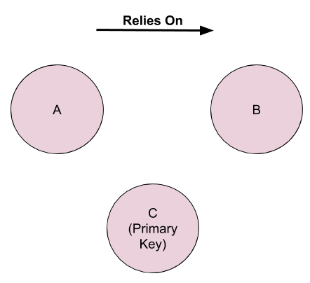
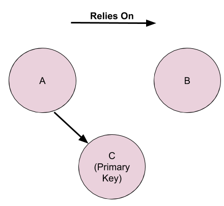
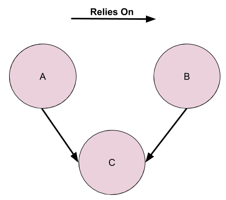
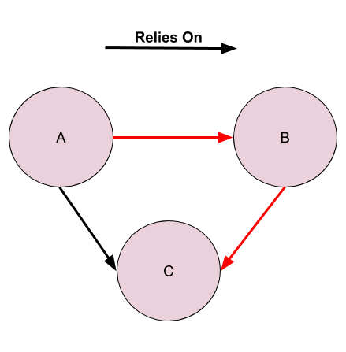

Database Lessons
Understand the significance of normalisation in databases
Normalisation: It’s a technique that you use while designing databases that determines how your data is organised. If you follow the principles of normalisation, you will effectively reduce the redundancy and dependency of your data.Apply the principles of first normal form, second normal form and third normal form to design a database.

First Normal Form (1NF)
To bring a database into first normal form you need to consider two rules:- All values are atomic.
- There are no repeating groups.
“This means a column cannot have arrays, linked lists, tables within tables, or record structures like those you find in other programming languages”
- Celko, Joe. SQL for Smarties: Advanced SQL Programming (Third Edition). s.l. : Morgan Kaufmann, 2005. 978-0123693792.
Example One
Identifying non-atomic values.| Student First Name | Student Last Name | Student ID | Grades (%) | Courses |
| Vivian | Bakiris | 1 | 75,82,84 | Databases I, Computational Thinking, Machine Learning II |
| Laurence | Boss | 2 | 84,87,77 | Embedded Systems, Circuits I, Ethics II |
| Clare | Giang | 3 | 85,91,88 | Solid Mechanics I, History of Engineering, Transport II |
| Brian | Kozik | 4 | 80,79,83 | Business Analytics II, Sustainability I, Data Structures II |
Answer
Grades and CoursesWhy is this an issue?
Let’s say we need to change Vivian’s grade in Computational thinking. We have to bump it up to an 83. How would we do this? (Think of this from a computational perspective, knowledge of SQL is not expected at this point).We would need to access that grades column. Then we would need to access the array of grades that is being stored. We would need to search that array, and locate the appropriate grade. Then change that grade.
Based off what you learnt in NODE X, that would increase the computational complexity of the program. Therefore, it’s best we avoid it. Additionally, it is important for other forms of normalisation that we will encounter throughout this node.
Let’s remove the non-atomic values.
| Student First Name | Student Last Name | Student ID | Grades (%) | Courses |
| Vivian | Bakiris | 1 | 75 | Databases I |
| Vivian | Bakiris | 1 | 82 | Computational Thinking |
| Vivian | Bakiris | 1 | 84 | Machine Learning II |
| Laurence | Boss | 2 | 84 | Embedded Systems |
| Laurence | Boss | 2 | 87 | Circuits I |
| Laurence | Boss | 2 | 77 | Ethics II |
| Clare | Giang | 3 | 85 | Solid Mechanics I |
| Clare | Giang | 3 | 91 | History of Engineering |
| Clare | Giang | 3 | 88 | Transport II |
| Brian | Kozik | 4 | 80 | Business Analytics II |
| Brian | Kozik | 4 | 79 | Sustainability I |
| Brian | Kozik | 4 | 83 | Data Structures II |
This is good. But now we have the issue of repeating groups. A repeating group, is a set of several columns that repeat together always.
For example, wherever the student ID is 1, the first name and last name will be Vivian and Bakiris respectively. Everytime the student ID is 2, the first name will be Laurence and the last name will be boss. So First Name, Last Name and Student ID have formed a repeating group.
1NF splits repeating groups. It eliminates duplicate columns from the same table, creates separate tables for each group of related data, and identifies each row with a unique column (primary key).
Hint: Can you have multiple students in Databases I? Can you have multiple students who obtained
a grade of 84?
Answer
Student ID is the best column to use as a primary key.Using the Student ID we can now separate this table into TWO tables. Let’s take a look at how.
Student Information
| Student ID | Student First Name | Student Last Name |
| 1 | Vivian | Bakiris |
| 2 | Laurence | Boss |
| 3 | Clare | Giang |
| 4 | Brian | Kozik |
Student Grades
| Student ID | Grade (%) | Course |
| 1 | 75 | Databases I |
| 1 | 82 | Computational Thinking |
| 1 | 84 | Machine Learning II |
| 2 | 84 | Embedded Systems |
| 2 | 87 | Circuits I |
| 2 | 77 | Ethics II |
| 3 | 85 | Solid Mechanics I |
| 3 | 91 | History of Engineering |
| 3 | 88 | Transport II |
| 4 | 80 | Business Analytics II |
| 4 | 79 | Sustainability I |
| 4 | 83 | Data Structures II |
Activity
Answer
You would look at the Student ID in the row (3), then go to the Student Information Table with the corresponding Student ID, and look up the first name in the row (in this case, Clare).Let’s consider the following example:
| CustomerID | DateOfPurchase | ItemPurchased | PaymentMethod | FirstName | LastName | Street | Suburb | Unit/Street Number | Postcode |
| 1 | 1/1/19 | Sweater | Card | Judy | Raper | Rainbow | Canada Water | 22 | 1234 |
| 3 | 2/1/19 | Pants | Cash | Helen | Merrills | Spring | London Bridge | 23 | 1235 |
| 4 | 3/1/19 | T-Shirt | Card | Sarah | Whittaker | Summer | Northhampton | 24 | 1236 |
| 1 | 4/1/19 | Shoes | Card | Judy | Raper | Rainbow | Canada Water | 22 | 1234 |
| 2 | 5/1/19 | Socks | Cash | Jaz | Crocker | Snow | Waterloo | 26 | 1237 |
| 4 | 6/1/19 | Dress | Card | Sarah | Whittaker | Summer | Northhampton | 24 | 1236 |
| 3 | 7/1/19 | Active Wear | Cash | Helen | Merrills | Spring | London Bridge | 23 | 1235 |
| 2 | 8/1/19 | Hoodie | Card | Jaz | Crocker | Snow | Waterloo | 26 | 1237 |
In order to normalise according to first normal form, we need to identify replication.
Why is replication an issue?
In the case above, let’s say customer 1, moved houses. How many fields would you need to modify to accomodate for such changes?Let’s highlight duplicates:
| CustomerID | DateOfPurchase | ItemPurchased | PaymentMethod | FirstName | LastName | Street | Suburb | Unit/Street Number | Postcode |
| 1 | 1/1/19 | Sweater | Card | Judy | Raper | Rainbow | Canada Water | 22 | 1234 |
| 3 | 2/1/19 | Pants | Cash | Helen | Merrills | Spring | London Bridge | 23 | 1235 |
| 4 | 3/1/19 | T-Shirt | Card | Sarah | Whittaker | Summer | Northhampton | 24 | 1236 |
| 1 | 4/1/19 | Shoes | Card | Judy | Raper | Rainbow | Canada Water | 22 | 1234 |
| 2 | 5/1/19 | Socks | Cash | Jaz | Crocker | Snow | Waterloo | 26 | 1237 |
| 4 | 6/1/19 | Dress | Card | Sarah | Whittaker | Summer | Northhampton | 24 | 1236 |
| 3 | 7/1/19 | Active Wear | Cash | Helen | Merrills | Spring | London Bridge | 23 | 1235 |
| 2 | 8/1/19 | Hoodie | Card | Jaz | Crocker | Snow | Waterloo | 26 | 1237 |
So let’s bring it into first normal form to avoid these issues.
Second Normal Form (2NF)
To bring a database into 2NF you need to consider two rules:- It is in first normal form
- All non-key attributes are fully functional dependent on the primary key
Ok, so what does that mean? Well let’s consider the previous example. We asked the question, what could be considered a key. There is another alternative. You could use a combination of First Name and Last Name as a composite key. This can only happen if you can guarantee that nobody will have the same name. This generally isn’t a good idea.
| Student ID | Grade (%) | Course | Room Number | Tutor In Charge |
| 1 | 75 | Databases I | Rm4B | Bobbie Brown |
| 1 | 82 | Computational Thinking | Rm5D | Beni Caiwood |
| 1 | 84 | Machine Learning II | Rm13C | Cleo Callaway |
| 2 | 84 | Embedded Systems | Rm21E | Clive Cao |
| 2 | 87 | Circuits I | Main Room | Delilah Dendy |
| 2 | 77 | Ethics II | Rm7A | Ezra Fittz |
| 3 | 85 | Solid Mechanics I | Rm6A | Fatima Saleh |
| 3 | 91 | History of Engineering | Rm12F | Gabriel Mendoza |
| 3 | 88 | Transport II | Raper Hall | Harriet Ngyuen |
| 4 | 80 | Business Analytics II | PLuS Lounge | Ingrid Blue |
| 4 | 79 | Sustainability I | Rm1F | James Walker |
| 4 | 83 | Data Structures II | Canada Water Theatre | Harry Zhu |
Answer
Room Number and Tutor in Charge.This is only dependent on the course. Regardless of who the student is, the course will be in the same place.
Question
| Student ID | Grade (%) | Course |
| 1 | 75 | Databases I |
| 1 | 82 | Computational Thinking |
| 1 | 84 | Machine Learning II |
| 2 | 84 | Embedded Systems |
| 2 | 87 | Circuits I |
| 2 | 77 | Ethics II |
| 3 | 85 | Solid Mechanics I |
| 3 | 91 | History of Engineering |
| 3 | 88 | Transport II |
| 4 | 80 | Business Analytics II |
| 4 | 79 | Sustainability I |
| 4 | 83 | Data Structures II |
Answer
Yes. As there isn’t a composite key and it’s in 1NF, it is also in 2NF.Third Normal Form (3NF)
A database is in 3NF if it’s in second normal form, and if it only has columns that are non-transitively dependent on the primary key.That may not make a lot of sense. To understand it, we should first try to understand what being transitive means.
Let’s look at an example of a transitive relationship:
3 is smaller than 5. 5 is smaller than 8. Therefore 3 is smaller than 8.
Removing the numbers, we’re saying. If A < B and B < C then A < C. < is a transient relationship in this case.
Let’s think of an example that is not transient.
Bob loves his daughter. Bob’s daughter loves her husband. Bob does not love her daughter’s husband.
This relationship is not transient. Just because Bob ❤ his daughter, and his daughter ❤ her husband, does not mean Bob loves her husband.
In third normal form, the columns cannot be transitively dependent on the primary key.
So in the case of 3NF, you can’t have transient dependencies.
In general terms: consider column A B and C (Primary Key) . If A relies on C and B relies on C and A relies on B then you can say that A relies on C through B. In other words, A is transitively dependent on C.
Let’s look at a diagram:
Consider our 3 entities; A,B and C (Primary Key).
|  A relies on C (Primary Key). |  B relies on C (Primary Key). |  A relies on B. |
The path that connects A B and C highlights that, A depends on C THROUGH B. In other words, A is transitively dependent on C.

Let’s consider a few simple database examples:
| Student ID (primary key) | First Name | Surname | No transitive dependancies |
| Person ID (primary key) | BMI | Overweight? | Yes, there is a transitive dependancy |
Activity
Answer
A: Not Transient. No link between height and gender.B: Transient. Certain manufacturers develop certain models. There is a link.
Database Integrity Rules
- Referential Integrity: Foreign key must have a matching entry in the primary key in the related table or must be null.
- Entity Integrity: All records must be unique and the primary key must have a unique value.
Example
Consider the scenario presented in ______. Let’s assume rather than unique identification numbers, each student is given a number that is the first letter of their first name concatenated with the first three letters of their last name.For example Judy Raper would have ID ‘JRap’.
Examine the following database example:
| Year | Grade | First Name | Last Name | Student ID |
| 1st | 65 | Melina | Skentsos | Mske |
| 2nd | 66 | Christina | Stojanovska | Csto |
| 3rd | 67 | Kate | Mulready | Kmul |
| 1st | 68 | Alan | Shenfield | Ashe |
| 2nd | 69 | Angela | Bakiris | Abak |
| 3rd | 70 | Andrew | Baker | Abak |
| 1st | 71 | Melina | Skentsos | Mske |